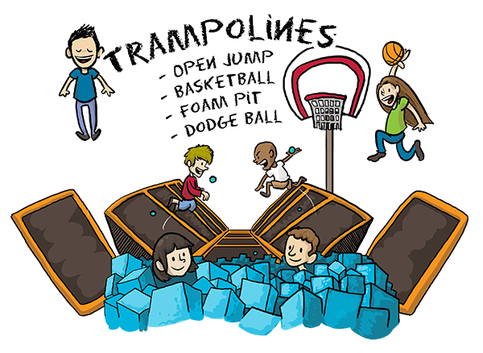

/ Blog / Spring!

Howdy folks!
It's been a pretty exciting past two months! The short story: lots of freelance gigs, short series of maps, and recorded an EP in my house.
The long story:


The most recent completed project would be doing some illustrations for an app called MyEarth. The app is a carbon footprint tracker which allows you to figure out how to help reduce yours.
We're all results-oriented creatures, however, so in order to help provide a positive immediate feedback for reducing your carbon footprint, Nancy Wong thought up an idea of a polar bear that you gradually save from doom. We've all seen the picture of a polar bear drifting away on a small iceberg.
And that was my job! Here's a few of the images for it. Want to see the rest? Get the app!

So far the projects been covered by UW-Madison News, ScienceDaily, and TIME(!). A bit disappointed TIME went with a Getty Images instead of the bear, but hey, they did call my drawings "A cute visual device". I'll take it!


Another fun out of the blue project came from Knuckleheads, an indoor Trampoline & Bowling park in Wisconsin Dells. Drove up there to get a tour, and a couple weeks later had this for them. I'm still amazed they have an indoor Hurricane ride- I've only ever seen those things in county fairs.
Here's a few of the icons from it!


You can see a full version of it over in my Illustrations gallery right on this very website.

Through the Cartography Lab, I've also been creating and updating a series of maps for the Center for the Study of the American Constitution. Each of the original states that ratified the constitution have their own map showing how they voted- some did it by county, others by towns.
CSAC had maps previously made by the Cart Lab, but it was over the course of the last twenty years... so most of these had to be compeltely redone using both the old maps and The Newberry Library for historical county borders.

The battle to get the constitution ratified was incredibly contentious. In some states they had to do multiple votes to get it passed, and others simply waited til they knew certain represenatives were out of town. I've got a few book reccomendations, and will hopefully be doing some sort of more detailed post about those battles over the summer.

Also this happened. Only lost a half hours of work, but still. Damn.

WE MADE AN EP!
Over three days. In our house. More details on that as we get closer to figuring them out. Still feels absolutely amazing.

In addition to that, I also threw together a couple of stickers for us to sell manipulating some Public Domain imagery and a poster for a show we played with The Real McKenzies. Which was an amazing show! Paul McKenzie is a beast.

...and I've made a bunch of other stuff (App Map! Illustrations! A Wedding Map!), but this post is already quite long.
If you've made it this far, thanks for the interest!

4-24-2015